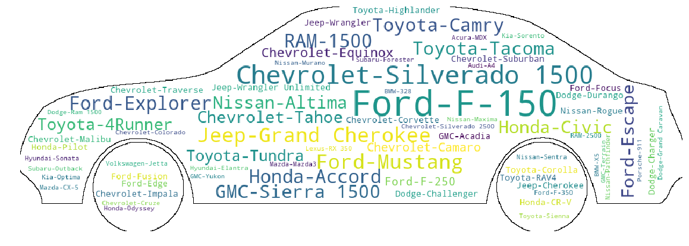

Conclusion
All the exploration and analysis have give a deep explaination of the used cars' market. The market is very active and has a wide type of cars and participants. Visualization is powerful and straigthforward. For example, wordcloud below shows the popular modes in the market, and we can easily tell which cars are the most common mode.

Figure 4.1 WordCloud for the popluar car model
code and data
We have used various visualization tools(both static and interactive) to analyze many aspects of the market. You can find various interesting vis and results from the previous analysis.
Here, we summarize key insights:
- American brands are dominating the used cars market.
- Most cars have not been certified. SUV is most popular body style.
- Majority of the sellers are dealers and most of them work with only one brand.
- The depreciation of cars is very fast at the early stage and will slow down after certain age and miles.
Recent generation cars have higher price and the price distribution is more concentrated.
- There are differences in sales volume across states. Texas, California and Florida rank as top one, two and three respectively in sales volume.
- States with greater population or GDP tend to have higher sales volume.
- The percentage of workers who use non auto commute transportation means can barely explain the difference in sales volume, but can partly explain the difference between New York and Florida, Texas and California.